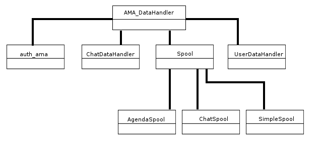

ARE:ADA rendering engine
ADA Rendering Engine
-
ARE è pensato per gestire l'intero
flusso di creazione del contenuto HTML/XHTML dinamico, la
selezione del corretto template, CSS, JavaScript e la produzione
dell'output separando completamente logica e interfaccia. I
templates utilizzati sono puro HTML senza parti in altri
linguaggi, e possono quindi essere gestiti e visualizzati
autonomamente. Il codice HTML generato è uniforme e
parametrizzato.
E' composto da due moduli, CORE (Common Output
Rendering Engine) e ALE (ADA Layout Engine).
Il primo (CORE) viene utilizzato per la generazione OO degli
elementi del DOM ed è pensato per aiutare lo sviluppatore nella
produzione di codice valido rispetto al DTD utilizzato. CORE
genera automaticamente gli elementi del DOM in base al DTD
impostato nella configurazione
Il secondo (ALE) viene utilizzato come template engine per
selezionare automaticamente in base ad alcuni parametri
(modulo, profilo utente, tipologia del nodo, del corso, preferenze
di installazione) il template HTML, i CSS e i file JavaScript
appropriati. ALE permette di usare templates di default e
microtemplates ricorsivi per semplificare il lavoro del grafico.
I due moduli possono in ogni caso essere utilizzati
indipendentemente l'uno dall'altro. E' possibile generare e
renderizzare una pagina HTML utilizzando solo CORE oppure
inviare gli oggetti CORE al template engine ALE che provvede a
renderizzare la pagina HTML. Viceversa è possibile generare
HTML senza utilizzare CORE ed inviarlo al template engine
ALE.
Common Output Rendering Engine
-
CORE viene utilizzato per la generazione OO degli elementi del
DOM ed è pensato per aiutare lo sviluppatore nella produzione di codice
valido rispetto al DTD utilizzato. CORE genera automaticamente gli
elementi del DOM in base al DTD impostato nella configurazione. Questo
significa svincolare lo sviluppo dell'applicazione dal formato
dell'interfaccia. Per esempio, è possibile avere diverse versioni della stessa
applicazione che producono pagine in HTML 4, XHTML 1.0 etc.
D'altra parte, questo sistema consente anche di proteggere
l'investimento effettuato per adeguarsi a nuovi standard in corso di
definizione. Ad esempio, nel caso in cui si voglia produrre output in
standard HTML 5 non sarà necessario apportare modifiche al codice
dell'applicazione, in quanto sarà CORE a farsi carico delle eventuali
differenze nel rendering degli elementi, oltre a supportare le novità
introdotte dalla nuova versione di HTML.
In teoria, CORE permette un'uscita in linguaggi di definizione della
pagina diversi dalla famiglia dell'HTML, come ad esempio PDF o SWF.
ADA Layout Engine
-
2.2ADA Layout Engine
ALE viene utilizzato come template engine per selezionare
automaticamente in base ad alcuni parametri (modulo, profilo
utente, tipologia del contenuto, tipo di device, preferenze di
installazione) il template HTML, i CSS e i file JavaScript
appropriati. ALE permette di usare template di default e
microtemplate ricorsivi per semplificare il lavoro del grafico.
E' possibile avere nella stessa applicazione diverse interfacce
di default predefinite (per tutta l'applicazione, per un modulo, per
una categoria di utenti o per un singolo utente).
I livelli di preferenza più specifici sovrascrivono i livelli più
generali nella selezione della tripletta di layout (template + css +
js). Al momento della renderizzazione dell'interfaccia le
preferenze dell'utente sono considerate prioritarie sulle preferenze
generali dell'applicazione.
L'algoritmo usato per la selezione è il seguente:
- * per un dato modulo M, ALE cerca una specifica tripletta di layout (template + css + js) tra quelli forniti dallo stile S specificato nel profilo dell'utente;
- * se la tripletta precedente non è disponibile, ALE utilizza lo stile di default del modulo;
- * se neanche questo è disponibile, ALE caricherà lo stile definito come default nella configurazione generale.
I template possono contenere codice HTML/XHTML ma non codice PHP o in altri linguaggi. All'interno di ogni template dovranno essere definiti dei segnaposto che saranno automaticamente riempiti con i dati inviati dall'applicazione. ALE si occuperà di mostrare l'output unendo i dati provenienti dall'applicazione con la tripletta di layout selezionata.
AMA: Ada mid Api
-

- 1. ottiene la connessione al database.
- 2. costruisce la query.
- 3. richiama un opportuno metodo del livello di astrazione dal database per eseguire la query.
- 4. restituisce il risultato ottenuto.
Figura 1:La gerarchia delle classi costituenti il livello AMA.
AMA è la parte di codice che si occupa di tutti gli accessi al database. Nella versione attuale per l'accesso al DB è usato PDO (PHP Data Object, http://it2.php.net/pdo), che è un'estensione scritta in C, molto veloce e standard. A sua volta, PDO si può collegare ad un qualsiasi DBMS. AMA è costituita da una classe principale, contenente la maggior parte dei metodi di accesso ai dati, che è estesa da opportune sottoclassi come è possibile vedere in figura.
Un tipico metodo del livello AMA si compone delle seguenti operazioni:
extendig user data
-
Aggiungere tabelle estese di dati utenti, rispetto allo standard.
-
Caso 1: dati in relazione 1:1 con l'utente:
-
1.creare i campi necessari nella tabella di tutti i provider, sia nel caso multiprovider che non multiprovider. Ad esempio:
ALTER TABLE `studente` ADD `samplefield` TEXT NOT NULL
-
2.creare una proprietà della classe ADAUser per ogni campo della tabella studente, che abbia lo steso nome del campo. Ad esempio:
public $samplefield;
-
3.verificare che esistano le proprietà $_extraTableName ed $_extraTableKeyProperty della classe ADAUser
e che siano valorizzate rispettivamente al nome dell tabella dove salvare (studente nell'esempio) ed al nome del suo indice. Ad esempio:
protected static $_extraTableName = "studente"; protected static $_extraTableKeyProperty = "id_utente_studente"
-
4.nel file include/Forms/UserExtraForm.inc.php scrivere il codice per la generazione della parte di form relativa ai campi creati nel metodo addExtraControls della classe UserExtraForm. Ad esempio:
$theForm->addTextInput('samplefield', translateFN('Campo di esempio')) ->setRequired() ->setValidator(FormValidator::NOT_EMPTY_STRING_VALIDATOR); - 5.se si cambia il nome del form definito nella classe UserExtraForm è necessario rinominare il file browsing/ajax/save_extraDataForm.php in modo che rifletta il nuovo nome dato al form. Ad esempio: se il nome è impostato così: $this->setName('renamedExtraDataForm'); allora il file deve essere: browsing/ajax/save_renamedExtraDataForm.php
-
6.Se ci sono solo campi di questo tipo, SENZA che ci siano altri campi del tipo descritti al caso 2, si può decidere se si vuole che i campi creati siano mostrati in
un apposito tab jQuery oppure direttamente nella form di modifica profilo. Quindi questo punto si divide nei seguenti casi, ma il file di riferimento per le modifiche è sempre browsing/edit_user.php:
- 1.Campi Extra gestiti con i tab jQuery e salvataggio tramite AJAX
(attenzione!! in questo caso NON impostare il salvataggio in POST tramite $userObj->useAjax(false); perché in generale ADAUser impedisce di poter impostare il salvataggio in POST quando non si può ma in questo caso è solo una questione di come viene disegnata la form in edit_user.php e quindi ADAUser non riesce a controllarlo!)
* istanziare la form per la gestione dei dati extra. Ad esempio:require_once ROOT_DIR . '/include/Forms/UserExtraForm.inc.php'; $extraForm = new UserExtraForm ($languages); $extraForm->fillWithArrayData ($user_dataAr);
-
* in edit_user.php ci sarà un array chiamato $tabsArray che gestisce le etichette dei tab creati e gli oggetti associati, il primo (ma non è necessario) dovrebbe essere quello del form standard, aggiungere un elemento all'array in cui mostrare il form per i dati extra. Ad esempio:
$tabsArray[3] = array (translateFN ('Sample Extra'), $extraForm);
- 2.Campi Extra nella form standard e salvataggio AJAX
- * Commentare o cancellare l'array $tabsArray in edit_user.php
- 3.Campi Extra nella form standard e salvataggio tramite POST
- * Fare il punto precedente, ed in più, sempre nel file browsing/edit_user.php mettere $userObj->useAjax(false); subito prima della costruzione di $optionsAr['onload_func'].
- 1.Campi Extra gestiti con i tab jQuery e salvataggio tramite AJAX
(attenzione!! in questo caso NON impostare il salvataggio in POST tramite $userObj->useAjax(false); perché in generale ADAUser impedisce di poter impostare il salvataggio in POST quando non si può ma in questo caso è solo una questione di come viene disegnata la form in edit_user.php e quindi ADAUser non riesce a controllarlo!)
-
1.creare i campi necessari nella tabella di tutti i provider, sia nel caso multiprovider che non multiprovider. Ad esempio:
-
Caso 2: dati in relazione 1:n con l'utente:
ATTENZIONE: Prima di creare la tabella, assicurarsi che il nome del campo che sarà chiave primaria/autoincrement sia così nominato: 'id'+NOME TABELLA SENZA PREFISSO CON INIZIALE MAIUSCOLA. Per la definizione di prefisso si veda il punto 3.
Esempio: se la tabella avrà nome ADA_moreUserFields (in cui ADA_ è il prefisso), il nome della sua chiave primaria deve essere: idMoreUserFields.
1. creare la tabella in cui vuoi salvare i dati. Ad esempio:CREATE TABLE `ADA_moreUserFields` ( `idMoreUserFields` int(11) unsigned NOT NULL AUTO_INCREMENT, `studente_id_utente_studente` int(11) DEFAULT NULL, `note` text COLLATE utf8_unicode_ci NOT NULL, `preferenze` int(3) NOT NULL, `privacy` int(1) NOT NULL, PRIMARY KEY (`idMoreUserFields`) ) ENGINE=MyISAM DEFAULT CHARSET=utf8 COLLATE=utf8_unicode_ci;
2. aggiungere un elemento all'array $_linkedTables della classe ADAUser che abbia lo stesso nome della tabella (senza prefisso).Ad esempio:protected static $_linkedTables = array ('moreUserFields');
3. verificare ed impostare la proprietà $_tablesPrefix della classe ADAUser, impostarla al prefisso delle tabelle usate, uguale per tutte le tabelle. Ad esempio:protected static $_tablesPrefix = "ADA_";
4. creare una classe che in include/ estenda extraTable e che abbia lo stesso nome della tabella CON L'INIZIALE MINUSCOLA e il cui nome file sia.class.inc.php. Questa classe dovrà necessariamente avere i metodi: getFields, buildArrayFromPOST, getKeyProperty, getForeignKeyProperty e getLabel copiati ed incollati dalla classe fornita come esempio nel file OneToManyDataSample.inc.php fornito nel repository. La classe sarà inclusa e istanzaita automaticamente all'occorenza.
5. in questa classe, creare le proprietà pubbliche per tutti i campi da gestire della tabella, incluso id e 'foreign Key'. Ad esempio:public $idMoreUserFields; // proprietà che rappresenta la chiave primaria della tabella public $studente_id_utente_studente; // proprietà che rappresenta la chiave esterna verso la tabella utente public $note; public $preferenze; public $privacy;
6. in questa classe, verificare che esistano le proprietà $keyProperty e $foreignKeyProperty e che siano valorizzate rispettivamente al nome del campo indice della tabella ed al nome del campo che ha la foreign key verso la tabella utente. Ad esempio:protected static $keyProperty = "idMoreUserFields"; protected static $foreignKeyProperty = "studente_id_utente_studente";
7. nel costruttore di questa classe, valorizzare l'array privato _labels con i valori delle etichette che appariranno in fase di render dei dati avendo l'accortezza di farli corrispondere all'ordine in cui vengono definite le proprietà al punto 5 e di impostare a null i valori corrispondenti ai campi id e foreign key della tabella. Ad esempio:$this->_labels = array ( null, null, translateFN('Note'), translateFN('Preference'), translateFN('Privacy') );
8. creare un form per la tabella in una classe il cui nome sia: 'User'+<nome tabella senza prefisso e con iniziale maiuscola>+'Form' che estenda FForm e sia in un file dentro include/Forms il cui nome file sia uguale a quello della classe + '.inc.php'. Ad esempio: nel file include/Forms/UserOneToManyDataSampleForm.inc.phpclass UserOneToManyDataSampleForm extends FForm {... }
9. usare il file di esempio fornito nel repository per generare la form. E' necessario modificare:- * il valore della variabile $formName impostandola a <nome tabella senza prefisso>
- * la parte di costruttore dove vengono definiti i controlli di input.
10. In edit_user.php ci sarà un array chiamato $tabsArray che gestisce le etichette dei tab creati, il primo è quello del form standard (ma gli si può cambiare posizione), aggiungere un elemento all'array in cui mostrare il form per la tabella in questione ed associarlo alla tabella. Ad esempio:$tabsArray[4] = array (translateFN ('Sample Extra 1:n'), 'moreUserFields');
Note: Essendo i dati dell'utente memorizzati in sessione potrebbe essere necessario fare un logout/login invece di un semplice refresh della pagina edit_user.php per vedere le modifiche!
Struttura del DB
-
DATABASE HOLIS-SESPIUS_COMMON:
lingue menu_items menu_page menu_tree messaggi_en messaggi_es messaggi_it messaggi_sistema module_HolisSearch_stopwords service_type servizio servizio_tester tester token utente utente_tester
DATABASE HOLIS-SESPIUS_PROVIDER_0:
amministratore_corsi amministratore_sistema autore banner bookmark chatroom clienti destinatari_messaggi extended_node history_esercizi history_nodi iscrizioni istanza_corso link log_classi messaggi modello_corso module_lex_assets module_lex_assets_abrogati module_lex_EUROVOC_COMPOUND_NON_PT module_lex_EUROVOC_DESCRIPTEUR module_lex_EUROVOC_DESCRIPTEUR_THESAURUS module_lex_EUROVOC_DOMAINES module_lex_EUROVOC_DOMAINES_CACHE module_lex_EUROVOC_LANGUES module_lex_eurovoc_rel module_lex_EUROVOC_RELATIONS_BT module_lex_EUROVOC_RELATIONS_RT module_lex_EUROVOC_RELATIONS_UI module_lex_EUROVOC_SCOPE_NOTE module_lex_EUROVOC_THESAURUS module_lex_EUROVOC_USED_FOR module_lex_fonti module_lex_stati module_lex_testi module_lex_tipologie_fonti module_lex_tipologie_fonti_OLD module_test_course_survey module_test_history_answer module_test_history_test module_test_nodes nodo nodo_BAK openmeetings_room posizione risorsa_esterna risorse_nodi sessione_eguidance studente tutor tutor_studenti utente utente_chatroom utente_chatroom_log utente_log utente_messaggio_log